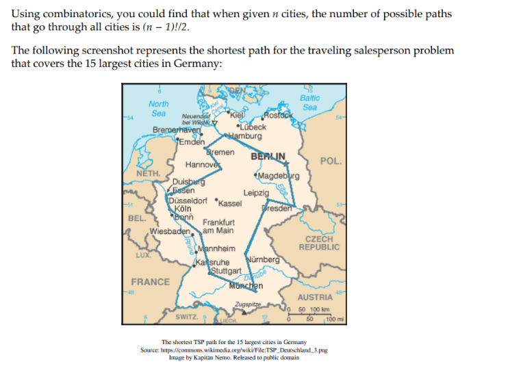
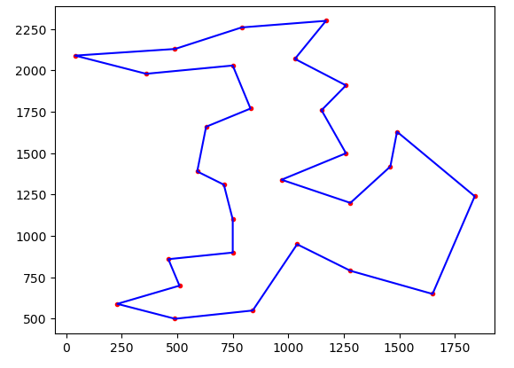

The Traveling Salesman#
“Given a list of cities and the distances between each pair of the cities, find the shortest possible path that goes through all the cities, and returns to the starting city.”

Resources#
1. Activity Building the Traveling Salesman Problem#
Problem#
Note
Create a class named
TravelingSalesmanProblemthat will have the following methods:def __init__(self, name):Creates Instancesdef __len__(self):Returns the length of the number of cities.def __createData(self):Creates the data from the file.def getTotalDistance(self, indices):Returns the total distance of the path.def plotData(self, indices):Plots the data.
Test it with the following:
tsp = TravelingSalesmanProblem("bayg29")
# generate a random solution and evaluate it:
#randomSolution = random.sample(range(len(tsp)), len(tsp))
# see http://elib.zib.de/pub/mp-testdata/tsp/tsplib/tsp/bayg29.opt.tour
optimalSolution = [0, 27, 5, 11, 8, 25, 2, 28, 4, 20, 1, 19, 9, 3, 14, 17, 13, 16, 21, 10, 18, 24, 6, 22, 7, 26, 15, 12, 23]
print("Problem name: " + tsp.name)
print("Optimal solution = ", optimalSolution)
print("Optimal distance = ", tsp.getTotalDistance(optimalSolution))
# plot the solution:
plot = tsp.plotData(optimalSolution)
plot.show()
It should print the following:
Problem name: bayg29
Optimal solution = [0, 27, 5, 11, 8, 25, 2, 28, 4, 20, 1, 19, 9, 3, 14, 17, 13, 16, 21, 10, 18, 24, 6, 22, 7, 26, 15, 12, 23]
Optimal distance = 9074.147

Solution#
import csv
import pickle
import os
import codecs
import numpy as np
from urllib.request import urlopen
import matplotlib.pyplot as plt
class TravelingSalesmanProblem:
"""This class encapsulates the Traveling Salesman Problem.
City coordinates are read from an online file and distance matrix is calculated.
The data is serialized to disk.
The total distance can be calculated for a path represented by a list of city indices.
A plot can be created for a path represented by a list of city indices.
:param name: The name of the corresponding TSPLIB problem, e.g. 'burma14' or 'bayg29'.
"""
def __init__(self, name):
"""
Creates an instance of a TSP
:param name: name of the TSP problem
"""
# initialize instance variables:
self.name = name
self.locations = []
self.distances = []
self.tspSize = 0
# initialize the data:
self.__initData()
def __len__(self):
"""
returns the length of the underlying TSP
:return: the length of the underlying TSP (number of cities)
"""
return self.tspSize
def __initData(self):
"""Reads the serialized data, and if not available - calls __create_data() to prepare it
"""
# attempt to read serialized data:
try:
self.locations = pickle.load(open(os.path.join("tsp-data", self.name + "-loc.pickle"), "rb"))
self.distances = pickle.load(open(os.path.join("tsp-data", self.name + "-dist.pickle"), "rb"))
except (OSError, IOError):
pass
# serailized data not found - create the data from scratch:
if not self.locations or not self.distances:
self.__createData()
# set the problem 'size':
self.tspSize = len(self.locations)
def __createData(self):
"""Reads the desired TSP file from the Internet, extracts the city coordinates, calculates the distances
between every two cities and uses them to populate a distance matrix (two-dimensional array).
It then serializes the city locations and the calculated distances to disk using the pickle utility.
"""
self.locations = []
# print("http://elib.zib.de/pub/mp-testdata/tsp/tsplib/tsp/" + self.name + ".tsp")
# Use the following instead: https://raw.githubusercontent.com/mastqe/tsplib/master/a280.tsp
URL = "https://raw.githubusercontent.com/mastqe/tsplib/master/"
print(URL + self.name + ".tsp")
# open whitespace-delimited file from url and read lines from it:
with urlopen(URL + self.name + ".tsp") as f:
reader = csv.reader(codecs.iterdecode(f, 'utf-8'), delimiter=" ", skipinitialspace=True)
# skip lines until one of these lines is found:
for row in reader:
if row[0] in ('DISPLAY_DATA_SECTION', 'NODE_COORD_SECTION'):
break
# read data lines until 'EOF' found:
for row in reader:
if row[0] != 'EOF':
# remove index at beginning of line:
del row[0]
# convert x,y coordinates to ndarray:
self.locations.append(np.asarray(row, dtype=np.float32))
else:
break
# set the problem 'size':
self.tspSize = len(self.locations)
# print data:
print("length = {}, locations = {}".format(self.tspSize, self.locations))
# initialize distance matrix by filling it with 0's:
self.distances = [[0] * self.tspSize for _ in range(self.tspSize)]
# populate the distance matrix with calculated distances:
for i in range(self.tspSize):
for j in range(i + 1, self.tspSize):
# calculate euclidean distance between two ndarrays:
distance = np.linalg.norm(self.locations[j] - self.locations[i])
self.distances[i][j] = distance
self.distances[j][i] = distance
print("{}, {}: location1 = {}, location2 = {} => distance = {}".format(i, j, self.locations[i], self.locations[j], distance))
# serialize locations and distances:
if not os.path.exists("tsp-data"):
os.makedirs("tsp-data")
pickle.dump(self.locations, open(os.path.join("tsp-data", self.name + "-loc.pickle"), "wb"))
pickle.dump(self.distances, open(os.path.join("tsp-data", self.name + "-dist.pickle"), "wb"))
def getTotalDistance(self, indices):
"""Calculates the total distance of the path described by the given indices of the cities
:param indices: A list of ordered city indices describing the given path.
:return: total distance of the path described by the given indices
"""
# distance between th elast and first city:
distance = self.distances[indices[-1]][indices[0]]
# add the distance between each pair of consequtive cities:
for i in range(len(indices) - 1):
distance += self.distances[indices[i]][indices[i + 1]]
return distance
def plotData(self, indices):
"""plots the path described by the given indices of the cities
:param indices: A list of ordered city indices describing the given path.
:return: the resulting plot
"""
# plot the dots representing the cities:
plt.scatter(*zip(*self.locations), marker='.', color='red')
# create a list of the corresponding city locations:
locs = [self.locations[i] for i in indices]
locs.append(locs[0])
# plot a line between each pair of consequtive cities:
plt.plot(*zip(*locs), linestyle='-', color='blue')
return plt
tsp = TravelingSalesmanProblem("bayg29")
# generate a random solution and evaluate it:
#randomSolution = random.sample(range(len(tsp)), len(tsp))
# see http://elib.zib.de/pub/mp-testdata/tsp/tsplib/tsp/bayg29.opt.tour
optimalSolution = [0, 27, 5, 11, 8, 25, 2, 28, 4, 20, 1, 19, 9, 3, 14, 17, 13, 16, 21, 10, 18, 24, 6, 22, 7, 26, 15, 12, 23]
print("Problem name: " + tsp.name)
print("Optimal solution = ", optimalSolution)
print("Optimal distance = ", tsp.getTotalDistance(optimalSolution))
# plot the solution:
plot = tsp.plotData(optimalSolution)
plot.show()
Problem name: bayg29
Optimal solution = [0, 27, 5, 11, 8, 25, 2, 28, 4, 20, 1, 19, 9, 3, 14, 17, 13, 16, 21, 10, 18, 24, 6, 22, 7, 26, 15, 12, 23]
Optimal distance = 9074.147
2. Solving TSP Using DEAP Framework#
Problem#
Now you will use the Deap framework to evaluate and find the best solutions. Use the following parameters:
POPULATION SIZE = 300
NUMBER OF GENERATIONS = 100
HALL_OF_FAME_SIZE = 1
Probability of crossover = 0.9
Probability of mutation = 0.1
Which is the idea fitness strategy?
Create a class of individual, whichuses the min fitness class as a fitness calculation.
Register an operator named
randomOrderthat generates a random permutation of the cities.Register an operator named
individualCreatorwhich responsability is to use individual and randomOrder tool.Create a populationCreator that generates the list of individuals
Make the evaluation as the total distance of the path.
Use tournament selection with a tournament size of 3.
Use cxOrdered crossover and mutationShuffleIndexes mutation.
Note
deap.tools.mutShuffleIndexes(individual, indpb)[source]
Shuffle the attributes of the input individual and return the mutant. The individual is expected to be a sequence. The indpb argument is the probability of each attribute to be moved. Usually this mutation is applied on vector of indices.
deap.tools.cxOrdered(ind1, ind2)[source]
Executes an ordered crossover (OX) on the input individuals. The two individuals are modified in place. This crossover expects sequence individuals of indices, the result for any other type of individuals is unpredictable.
More Operators:

Solution#
from deap import base
from deap import creator
from deap import tools
from deap import algorithms
import random
import array
import numpy as np
import matplotlib.pyplot as plt
import seaborn as sns
# set the random seed for repeatable results
RANDOM_SEED = 42
random.seed(RANDOM_SEED)
# create the desired traveling salesman problem instace:
TSP_NAME = "bayg29" # name of problem
tsp = TravelingSalesmanProblem(TSP_NAME)
# Genetic Algorithm constants:
POPULATION_SIZE = 300
MAX_GENERATIONS = 200
HALL_OF_FAME_SIZE = 1
P_CROSSOVER = 0.9 # probability for crossover
P_MUTATION = 0.1 # probability for mutating an individual
toolbox = base.Toolbox()
# define a single objective, minimizing fitness strategy:
creator.create("FitnessMin", base.Fitness, weights=(-1.0,))
# create the Individual class based on list of integers:
creator.create("Individual", array.array, typecode='i', fitness=creator.FitnessMin)
# create an operator that generates randomly shuffled indices:
toolbox.register("randomOrder", random.sample, range(len(tsp)), len(tsp))
# create the individual creation operator to fill up an Individual instance with shuffled indices:
toolbox.register("individualCreator", tools.initIterate, creator.Individual, toolbox.randomOrder)
# create the population creation operator to generate a list of individuals:
toolbox.register("populationCreator", tools.initRepeat, list, toolbox.individualCreator)
# Calculating The Distance as the TSP Distance.
# fitness calculation - compute the total distance of the list of cities represented by indices:
def tpsDistance(individual):
return tsp.getTotalDistance(individual), # return a tuple
toolbox.register("evaluate", tpsDistance)
# Genetic operators:
toolbox.register("select", tools.selTournament, tournsize=3)
toolbox.register("mate", tools.cxOrdered)
toolbox.register("mutate", tools.mutShuffleIndexes, indpb=1.0/len(tsp))
# create initial population (generation 0):
population = toolbox.populationCreator(n=POPULATION_SIZE)
# prepare the statistics object:
stats = tools.Statistics(lambda ind: ind.fitness.values)
stats.register("min", np.min)
stats.register("avg", np.mean)
# define the hall-of-fame object:
hof = tools.HallOfFame(HALL_OF_FAME_SIZE)
# perform the Genetic Algorithm flow with hof feature added:
population, logbook = algorithms.eaSimple(population, toolbox, cxpb=P_CROSSOVER, mutpb=P_MUTATION,
ngen=MAX_GENERATIONS, stats=stats, halloffame=hof, verbose=True)
# print best individual info:
best = hof.items[0]
print("-- Best Ever Individual = ", best)
print("-- Best Ever Fitness = ", best.fitness.values[0])
gen nevals min avg
0 300 21103.3 26457
1 279 19562.4 25128.9
2 275 19456.5 24267.3
3 279 19760.9 23592
4 278 19406.4 22963.5
5 276 19105.2 22480.7
6 281 17802.4 22129.9
7 279 18160.2 21581.5
8 274 17691.3 21253.6
9 277 16011.9 20877.8
10 268 16011.9 20597.9
11 279 15878.8 20413.2
12 269 14589.1 20188.2
13 272 14589.1 19987.8
14 281 15182.9 19910.4
15 276 15836.2 19437
16 276 15687.4 19117.2
17 282 15426.5 19039.4
18 282 14905.2 18696.7
19 269 15020.4 18614.9
20 275 13346.3 18424
21 276 14711.4 18330.1
22 275 13139.1 18312
23 274 13139.1 18005
24 278 13002.5 17725.6
25 262 12203.5 17543.2
26 274 13157.3 17285.2
27 260 12918.6 16946.3
28 271 12918.6 16646
29 262 12918.6 16441
30 279 12652.9 16194.2
31 265 12652.9 15910.6
32 278 12565.6 15942.4
33 278 12520.5 15682
34 283 12436.1 15569.5
35 272 12214 15441.9
36 265 12278.3 15353.6
37 271 12302.9 15371.8
38 273 12037.5 15182
39 271 11969.4 14974.3
40 267 12081.2 14825
41 266 11785.8 14612.3
42 282 11477 14591.8
43 269 10869.8 14446
44 270 11475 14452.8
45 277 11796.8 14491.9
46 277 11262.8 14324.7
47 277 11333.1 14183.2
48 281 11311 14135.4
49 271 10921.8 14212.2
50 274 11172.8 14137.9
51 279 11295.1 13945
52 280 10870.6 14044.3
53 278 11225.2 14167.9
54 270 11336.3 13993.6
55 268 10472.9 13886.4
56 285 10637.9 13841.5
57 285 10885.9 13732.8
58 273 10885.9 13634.4
59 277 10885.9 13478.8
60 265 10835.7 13253.8
61 264 10526.5 13286.8
62 268 10445.5 12951.3
63 276 10501.6 12833.3
64 267 10484.8 12683.7
65 280 10501.6 12505
66 277 10355.2 12469.2
67 268 10231.6 12586.4
68 273 10367.5 12436.2
69 281 10355.2 12450.7
70 274 10281.8 12607.8
71 261 10281.8 12339.2
72 269 10163.3 12328.2
73 276 10048.3 12238.8
74 272 10048.3 12162.9
75 270 10029.8 12178.7
76 273 9957.92 12117
77 272 9957.92 12131.7
78 276 9852.51 11973.6
79 273 9852.51 11883.2
80 268 9775.74 11853.7
81 288 9775.74 11715.1
82 276 9775.74 11806.3
83 276 9775.74 11826.1
84 268 9775.74 11618.9
85 271 9775.74 11430.3
86 265 9775.74 11586.3
87 269 9775.74 11394.7
88 259 9775.74 11172.9
89 275 9775.74 11210.5
90 275 9775.74 11081.7
91 272 9775.74 11051.4
92 277 9775.74 11065
93 274 9775.74 11113.7
94 276 9775.74 11010
95 272 9775.74 10886.1
96 272 9771.1 10758.8
97 267 9771.1 10639.7
98 279 9771.1 10681.8
99 262 9771.1 10511.1
100 279 9771.1 10403.5
101 284 9771.1 10424.7
102 275 9767.79 10432.8
103 266 9767.79 10418
104 272 9767.79 10264.2
105 285 9767.79 10185.9
106 277 9767.79 10167.7
107 279 9767.79 10131.7
108 269 9763.16 10109.5
109 273 9734.57 10126.7
110 282 9729.93 10360.6
111 268 9729.93 10356.4
112 272 9729.93 10529.1
113 271 9729.93 10511.3
114 275 9729.93 10510.6
115 270 9729.93 10166.8
116 280 9729.93 10064.7
117 257 9729.93 9985.98
118 273 9729.93 9935.52
119 281 9729.93 9893.57
120 268 9729.93 9936.33
121 282 9729.93 10072.7
122 285 9729.93 9927.8
123 270 9729.93 9995.76
124 266 9729.93 9932.75
125 274 9729.93 9938.32
126 284 9729.93 9972.79
127 263 9616.16 9979.21
128 275 9616.16 9910.33
129 277 9616.16 9975.06
130 272 9616.16 10001.9
131 279 9616.16 9999.09
132 284 9616.16 9969.31
133 271 9616.16 9917.73
134 262 9616.16 9953.55
135 273 9616.16 9877.65
136 266 9616.16 9874.04
137 256 9616.16 9737.42
138 274 9616.16 9825.19
139 272 9616.16 9901.44
140 269 9616.16 9846.18
141 266 9558.06 9843.06
142 263 9558.06 9804.26
143 261 9558.06 9871.85
144 279 9558.06 9829.84
145 273 9558.06 9939.57
146 268 9558.06 9771.86
147 278 9558.06 9779.87
148 278 9556.72 9787.78
149 281 9549.99 9779
150 272 9549.99 9803.48
151 278 9549.99 9809.74
152 270 9549.99 9780.88
153 271 9549.99 9686.82
154 269 9549.99 9880.91
155 265 9549.99 9899.8
156 282 9549.99 9978.31
157 277 9549.99 9823.43
158 273 9549.99 10009.3
159 279 9549.99 9954.48
160 273 9549.99 9980.84
161 273 9549.99 9985.32
162 282 9549.99 9923.51
163 284 9549.99 9981.25
164 273 9549.99 10222.2
165 263 9549.99 10151
166 271 9549.99 10154.6
167 279 9549.99 10073.1
168 267 9549.99 9895.51
169 277 9549.99 9781.48
170 270 9549.99 9840.1
171 273 9549.99 9744.42
172 273 9549.99 9811.11
173 277 9549.99 9792.8
174 284 9549.99 9860.57
175 273 9549.99 9668.35
176 266 9549.99 9705.16
177 275 9549.99 9800.14
178 270 9549.99 9751.82
179 281 9549.99 9816.48
180 269 9549.99 9743.48
181 280 9549.99 9715.93
182 278 9549.99 9792.3
183 280 9549.99 9716.09
184 290 9549.99 9811.45
185 281 9549.99 9758.04
186 269 9549.99 9693.11
187 281 9549.99 9761.23
188 273 9549.99 9712.46
189 262 9549.99 9786.26
190 276 9549.99 9805.2
191 282 9549.99 9675.81
192 269 9549.99 9733.11
193 258 9549.99 9981.48
194 273 9549.99 9722.19
195 267 9549.99 9694.95
196 281 9549.99 9845.83
197 262 9549.99 9903.02
198 274 9549.99 9749.83
199 270 9549.99 9886.32
200 277 9549.99 9837.95
-- Best Ever Individual = Individual('i', [0, 27, 11, 5, 20, 4, 8, 25, 2, 28, 1, 19, 9, 3, 14, 17, 13, 16, 21, 10, 18, 12, 23, 7, 26, 22, 6, 24, 15])
-- Best Ever Fitness = 9549.9853515625
# plot best solution:
plt.figure(1)
tsp.plotData(best)
# plot statistics:
minFitnessValues, meanFitnessValues = logbook.select("min", "avg")
plt.figure(2)
sns.set_style("whitegrid")
plt.plot(minFitnessValues, color='red')
plt.plot(meanFitnessValues, color='green')
plt.xlabel('Generation')
plt.ylabel('Min / Average Fitness')
plt.title('Min and Average fitness over Generations')
# show both plots:
plt.show()
TSP Modifying Tour Size: 3#
Experimenting with the Tournament Size reveals that: When the size is increasing the size of the torunament, is not able to retain the best solutions…
# Calculating The Distance as the TSP Distance.
# fitness calculation - compute the total distance of the list of cities represented by indices:
def tpsDistance(individual):
return tsp.getTotalDistance(individual), # return a tuple
toolbox.register("evaluate", tpsDistance)
# Genetic operators:
toolbox.register("select", tools.selTournament, tournsize=2)
toolbox.register("mate", tools.cxOrdered)
toolbox.register("mutate", tools.mutShuffleIndexes, indpb=1.0/len(tsp))
# create initial population (generation 0):
population = toolbox.populationCreator(n=POPULATION_SIZE)
# prepare the statistics object:
stats = tools.Statistics(lambda ind: ind.fitness.values)
stats.register("min", np.min)
stats.register("avg", np.mean)
# define the hall-of-fame object:
hof = tools.HallOfFame(HALL_OF_FAME_SIZE)
# perform the Genetic Algorithm flow with hof feature added:
population, logbook = algorithms.eaSimple(population, toolbox, cxpb=P_CROSSOVER, mutpb=P_MUTATION,
ngen=MAX_GENERATIONS, stats=stats, halloffame=hof, verbose=True)
# print best individual info:
best = hof.items[0]
print("-- Best Ever Individual = ", best)
print("-- Best Ever Fitness = ", best.fitness.values[0])
gen nevals min avg
0 300 21103.5 26399.8
1 274 21361.6 25481.4
2 258 19153.7 24928.2
3 285 18299.3 24318.2
4 275 19199.8 23753.1
5 271 18344.1 23313.5
6 270 18344.1 23081.9
7 264 18078.7 22838.6
8 273 17945.4 22705.6
9 276 18042.5 22653.7
10 263 17340.4 22467.2
11 268 17549.7 22291.7
12 272 17144.4 22138.2
13 274 17379.9 21704.1
14 269 17143.3 21659.2
15 261 17288.3 21517.3
16 273 16224.5 21419.9
17 277 16676.9 21367.1
18 263 15293 21390.3
19 272 16688.3 21436.5
20 272 16388.9 21475.2
21 270 16388.9 21326.1
22 278 16014.6 21420.9
23 273 16779.1 21255.7
24 278 16615 21044
25 254 16738.1 20971.9
26 274 17463 21139.5
27 274 17331.4 21043.8
28 272 16859.7 20956.5
29 271 16402 20855
30 271 16206.3 20919.5
31 271 16492.5 20749.2
32 268 16853.3 20707.1
33 264 16667.7 20748.3
34 288 16083.8 20855.3
35 277 16157.7 20896.1
36 265 16036.8 20924.3
37 266 16169.1 20953.2
38 268 16335.5 20932.7
39 279 16335.5 20877.3
40 269 16521.9 20784.1
41 281 17424.2 21013.6
42 273 17046.1 21073.9
43 262 16854 20843.3
44 276 16357.8 20953.5
45 276 16357.8 21156
46 265 17285.9 21187.9
47 276 16799.8 21134.7
48 277 16251 21150.8
49 272 15854.7 21271.9
50 277 15588.8 21348.2
51 278 14563.7 21173.6
52 279 14249.4 20943.6
53 265 16149.7 20917.3
54 275 17031.8 20867.9
55 274 16278.2 20746.1
56 262 15532.3 20685.8
57 267 16097.3 20703.7
58 277 16441.2 20357.1
59 285 15057.9 20287
60 270 15057.9 20072.7
61 263 15311.8 20077.8
62 275 16103.8 20311.4
63 270 16103.8 20438.1
64 274 15672.4 20323.6
65 268 16123.5 20361.7
66 258 15764.1 20453.8
67 278 15573.2 20546.5
68 278 15573.2 20312.7
69 276 15945 20168.7
70 262 16211 20045.8
71 265 15224.5 19886.9
72 275 15224.5 19888.3
73 280 15809 20169.8
74 278 16331.9 20202
75 271 16285.4 20218.7
76 268 13871.3 20027.3
77 264 13871.3 19940.9
78 264 15407 19734.6
79 267 15645.2 19789.4
80 276 12955.5 19732.4
81 272 12955.5 19861.2
82 273 12955.5 19564.4
83 268 14070.9 19513.9
84 271 14445.9 19350.3
85 281 14502.3 19297.6
86 278 14827.2 19126.1
87 268 14461.4 18970.9
88 255 14230.7 18559.6
89 270 14109.2 18499.4
90 265 13381.8 18369.5
91 272 14131.6 18252
92 275 14549.2 18079.1
93 273 14048.4 18096.7
94 284 14137.4 18202.6
95 258 13344.2 18079.2
96 274 13191 18065.4
97 276 13570.1 18014.6
98 272 13570.1 17879.5
99 277 13789.3 18022
100 280 13691.4 17954.3
101 274 13468.1 17759.1
102 280 13172.8 17626.5
103 268 13159.3 17696.3
104 259 14291 17820
105 279 14462.7 17779.8
106 265 14476.2 17836
107 268 13715.8 17840.7
108 276 14242.1 17942.9
109 284 13628 18132.7
110 273 13390.5 18238.5
111 279 13600.3 18442.6
112 266 13461.5 18331.3
113 271 13461.5 18271.2
114 280 12910.8 18261.2
115 281 13587.4 18260.8
116 269 13639.6 18263.5
117 273 13603.5 18210.9
118 276 13977.8 18051.2
119 280 13195.3 17917.1
120 273 14310.7 17827.5
121 262 13982.4 18028.4
122 273 13569.9 18039.5
123 278 14228.8 18189.9
124 276 13208.5 18056.2
125 265 13632.2 17937.3
126 273 14468.8 18115.5
127 274 14330.4 18172.6
128 268 14212.1 18202.2
129 282 14523.6 18310.7
130 280 14624.1 18408.5
131 277 14025.1 18482.2
132 279 14359.8 18284.9
133 270 14243.4 18428.7
134 273 13577 18301.5
135 282 13878.6 18267.4
136 268 13758.6 18087.1
137 270 14297.1 18154.7
138 268 14274.6 18039.8
139 285 13162.2 18088.6
140 281 13472.2 18132.5
141 266 13937.4 18021.2
142 267 13257.5 17882.7
143 266 13376.4 17756.5
144 277 13796.6 17633.3
145 278 13769.7 17685.6
146 276 14044.2 17795.6
147 267 14044.2 17691.6
148 270 13542.7 17753.6
149 264 13634.8 17730.1
150 276 13294.7 17928.2
151 276 13693.6 17949.9
152 277 13600.8 17875.5
153 274 12738.6 17938.5
154 268 12738.6 17944
155 273 12296.6 17932.7
156 269 12741.2 17570.3
157 274 13152.3 17612.7
158 273 12946 17662.3
159 264 12070.9 17603.5
160 267 12070.9 17389.9
161 264 12070.9 17347.1
162 279 12967.3 17124
163 275 12370.7 16920
164 274 12730.9 16864.2
165 270 13658.8 16925.7
166 267 13225.9 17144.9
167 267 13610.7 17313.1
168 276 13912.6 17418.3
169 270 12961.4 17399.4
170 271 13335.9 17502.1
171 273 13357.5 17628.6
172 263 13456.1 17795.4
173 275 14259.9 17795.4
174 267 13859.9 17726.7
175 269 13752 17703.6
176 269 13852.9 17626.9
177 283 13539 17612.7
178 273 13418.4 17636.9
179 262 13230.4 17498.5
180 279 13702 17553.1
181 279 13456.2 17665
182 270 13874.4 17881.2
183 280 13818.4 17950.4
184 271 13818.4 17969.7
185 279 13660.9 17971.5
186 272 13793.1 18030.4
187 265 13793.1 18153.7
188 286 14066.1 17980.3
189 258 13236.8 17798.1
190 272 13463.7 17976.3
191 277 13233.5 17818.7
192 276 14378.3 18048.2
193 271 13784.3 18182.4
194 278 14436.5 18534.6
195 277 14171.8 18530.7
196 281 13440.1 18614.7
197 273 13938.8 18707.3
198 271 14678.1 18458
199 271 14921.4 18568.2
200 258 14572.3 18512.5
-- Best Ever Individual = Individual('i', [11, 27, 0, 7, 23, 26, 15, 6, 22, 24, 3, 18, 17, 13, 16, 21, 10, 14, 19, 1, 25, 4, 5, 8, 28, 2, 9, 12, 20])
-- Best Ever Fitness = 12070.9267578125
# plot best solution:
plt.figure(1)
tsp.plotData(best)
# plot statistics:
minFitnessValues, meanFitnessValues = logbook.select("min", "avg")
plt.figure(2)
sns.set_style("whitegrid")
plt.plot(minFitnessValues, color='red')
plt.plot(meanFitnessValues, color='green')
plt.xlabel('Generation')
plt.ylabel('Min / Average Fitness')
plt.title('Min and Average fitness over Generations')
# show both plots:
plt.show()
### Attempt using Elitism
import elitism
# Calculating The Distance as the TSP Distance.
# fitness calculation - compute the total distance of the list of cities represented by indices:
def tpsDistance(individual):
return tsp.getTotalDistance(individual), # return a tuple
toolbox.register("evaluate", tpsDistance)
# Genetic operators:
toolbox.register("select", tools.selTournament, tournsize=2)
toolbox.register("mate", tools.cxOrdered)
toolbox.register("mutate", tools.mutShuffleIndexes, indpb=1.0/len(tsp))
# create initial population (generation 0):
population = toolbox.populationCreator(n=POPULATION_SIZE)
# prepare the statistics object:
stats = tools.Statistics(lambda ind: ind.fitness.values)
stats.register("min", np.min)
stats.register("avg", np.mean)
# define the hall-of-fame object:
hof = tools.HallOfFame(HALL_OF_FAME_SIZE)
# perform the Genetic Algorithm flow with hof feature added:
# population, logbook = algorithms.eaSimple(population, toolbox, cxpb=P_CROSSOVER, mutpb=P_MUTATION,
# ngen=MAX_GENERATIONS, stats=stats, halloffame=hof, verbose=True)
population, logbook = elitism.eaSimpleWithElitism(population, toolbox, cxpb=P_CROSSOVER, mutpb=P_MUTATION,
ngen=MAX_GENERATIONS, stats=stats, halloffame=hof, verbose=True)
# print best individual info:
best = hof.items[0]
print("-- Best Ever Individual = ", best)
print("-- Best Ever Fitness = ", best.fitness.values[0])
# plot best solution:
plt.figure(1)
tsp.plotData(best)
# plot statistics:
minFitnessValues, meanFitnessValues = logbook.select("min", "avg")
plt.figure(2)
sns.set_style("whitegrid")
plt.plot(minFitnessValues, color='red')
plt.plot(meanFitnessValues, color='green')
plt.xlabel('Generation')
plt.ylabel('Min / Average Fitness')
plt.title('Min and Average fitness over Generations')
# show both plots:
plt.show()
gen nevals min avg
0 300 21219.9 26467.8
1 276 20638 25521.8
2 282 20272.5 24884.4
3 260 18344.9 24197.1
4 278 18344.9 23918.4
5 278 17194.8 23487.6
6 280 17194.8 23202.3
7 282 17194.8 23106
8 275 17194.8 22890.5
9 278 16695.1 22527.2
10 273 16695.1 22323.1
11 279 16695.1 22103
12 275 16695.1 21905.8
13 262 16695.1 21578.5
14 270 16695.1 21511.8
15 271 16695.1 21421.8
16 267 16695.1 21416.1
17 269 16448.3 21469.7
18 271 16443.9 21180.3
19 278 16443.9 21154.2
20 282 16443.9 21224.8
21 273 16147.2 21298.1
22 275 16147.2 21319.3
23 270 16147.2 21238.5
24 277 14959.4 21254.6
25 269 14959.4 21262.3
26 272 14959.4 21114.6
27 260 14959.4 21199.2
28 280 14959.4 21174
29 270 14959.4 21024.7
30 271 14959.4 20909.9
31 267 14959.4 20744
32 270 14505.1 20586.8
33 276 14505.1 20572.7
34 268 14505.1 20585.1
35 277 14505.1 20593.3
36 273 14505.1 20373.2
37 269 14432.1 20338.1
38 265 14432.1 20251.1
39 270 14432.1 20027
40 268 14432.1 19904.4
41 270 14432.1 19865.6
42 281 14432.1 19723.6
43 272 14432.1 19403.4
44 263 14432.1 19393.1
45 279 14432.1 19404.7
46 278 14432.1 19095
47 265 14353.2 18961
48 279 14353.2 18960.3
49 272 14336.5 18909.9
50 279 14336.5 19068.2
51 266 14291 19109.2
52 260 14291 19077.7
53 267 14291 19043.8
54 278 14291 19074.8
55 270 14291 19183
56 263 14291 19122.6
57 276 14291 19053.9
58 280 14291 19265
59 268 13912.2 19110.3
60 280 13912.2 19154.2
61 274 13912.2 19151.5
62 279 13912.2 19186.3
63 274 13912.2 19076.5
64 270 13912.2 18957
65 271 13680 19043.5
66 268 13680 18885.5
67 275 13680 18870.7
68 282 13680 18860.3
69 281 13680 18984.5
70 275 13680 18966
71 275 13680 18713.1
72 270 13680 18877.2
73 267 13680 18771.1
74 276 13680 18721.6
75 272 13680 18730.5
76 274 13680 18719.6
77 280 13680 18629.1
78 271 13680 19013.3
79 276 13680 18954.8
80 263 13680 18965.8
81 268 13539.2 19078.7
82 269 13539.2 18964.2
83 269 13539.2 19171.5
84 263 13539.2 19073.9
85 273 13539.2 19108.6
86 270 13539.2 19345.2
87 266 13539.2 19330.6
88 260 13539.2 19278.1
89 272 13539.2 19367.2
90 276 13539.2 19219
91 271 13539.2 19422
92 269 13539.2 19438.4
93 271 13539.2 19301.6
94 281 13539.2 19521.6
95 267 13539.2 19447
96 267 13539.2 19416.6
97 276 13539.2 19510.2
98 281 13539.2 19566.9
99 265 13539.2 19519.1
100 267 13539.2 19356.7
101 264 13539.2 19210.5
102 273 13539.2 19203.6
103 277 13539.2 19181.4
104 267 13539.2 18950.4
105 270 13539.2 18946.4
106 277 13539.2 19101.3
107 278 13539.2 19126.7
108 277 13539.2 19076.7
109 270 13539.2 19198.5
110 260 13539.2 19010.5
111 265 13531.3 19203.9
112 276 13155.3 19083.3
113 283 13155.3 18903.2
114 271 13155.3 18779.2
115 280 13155.3 18662
116 279 13155.3 18638.1
117 266 13155.3 18731.5
118 267 13155.3 18649.7
119 272 13155.3 18777.7
120 276 13155.3 18563.6
121 271 13155.3 18477.8
122 266 13155.3 18401.6
123 284 13155.3 18180.6
124 279 13155.3 18271
125 267 13155.3 18375.8
126 283 13155.3 18192
127 264 13155.3 18437.5
128 276 13155.3 18491.9
129 250 13155.3 18249.9
130 267 13155.3 18140
131 267 13155.3 18326
132 271 13155.3 18352.6
133 273 13155.3 18533
134 273 13155.3 18456.4
135 271 13155.3 18440.1
136 275 13155.3 18353.6
137 273 13155.3 18340.5
138 274 13155.3 18287.8
139 276 13155.3 18304.6
140 272 13155.3 18203.1
141 278 13155.3 18367.2
142 273 13155.3 18628.6
143 264 13155.3 18564.2
144 278 13155.3 18668
145 260 13155.3 18585.9
146 276 13155.3 18586.5
147 263 13155.3 18583.1
148 270 13155.3 18165.6
149 270 13155.3 18193.8
150 262 13155.3 18288.4
151 272 13155.3 18125.1
152 274 13155.3 18429.8
153 259 13155.3 18464
154 265 13155.3 18499.6
155 269 13155.3 18317.6
156 286 13155.3 18350.5
157 255 13155.3 18277.5
158 274 13071 18338.9
159 269 13071 18233.7
160 267 13071 18378
161 273 13071 18350.4
162 282 13071 18146.3
163 274 13071 18005.8
164 279 13071 18303.3
165 273 13071 18319.4
166 285 13071 18674.4
167 276 13071 18771.8
168 266 13071 18825.1
169 255 13071 18610.6
170 275 13071 18712.8
171 271 13071 18762.3
172 267 13071 18941.9
173 284 13071 19018.1
174 274 13071 19268.8
175 274 13071 19311.6
176 266 13071 19214.6
177 281 13071 19308.3
178 289 13071 19196.7
179 277 13071 19067.4
180 256 13071 19091.8
181 286 13071 19183.3
182 270 13071 19080.7
183 269 13071 18880.7
184 262 13071 18716.6
185 265 13071 18638.1
186 277 13071 18493.9
187 275 13071 18739.1
188 267 13071 18706.8
189 266 13071 18900.2
190 271 13071 18870
191 282 13071 19022.7
192 268 13071 19037.4
193 274 13071 18949
194 263 13071 18789
195 275 13071 18757.7
196 272 13071 18854.2
197 259 13071 18893.6
198 273 13071 18928.7
199 265 13071 19257.7
200 280 13071 19339.1
-- Best Ever Individual = Individual('i', [13, 17, 16, 21, 10, 24, 6, 15, 20, 8, 11, 5, 4, 2, 28, 25, 7, 23, 27, 0, 12, 1, 3, 14, 9, 19, 26, 22, 18])
-- Best Ever Fitness = 13071.04296875
from deap import base
from deap import creator
from deap import tools
import random
import array
import numpy as np
import matplotlib.pyplot as plt
import seaborn as sns
import tsp
import elitism
# set the random seed for repeatable results
RANDOM_SEED = 42
random.seed(RANDOM_SEED)
# create the desired traveling salesman problem instace:
TSP_NAME = "bayg29" # name of problem
tsp = tsp.TravelingSalesmanProblem(TSP_NAME)
# Genetic Algorithm constants:
POPULATION_SIZE = 300
MAX_GENERATIONS = 200
HALL_OF_FAME_SIZE = 30
P_CROSSOVER = 0.9 # probability for crossover
P_MUTATION = 0.1 # probability for mutating an individual
toolbox = base.Toolbox()
# define a single objective, minimizing fitness strategy:
creator.create("FitnessMin", base.Fitness, weights=(-1.0,))
# create the Individual class based on list of integers:
creator.create("Individual", array.array, typecode='i', fitness=creator.FitnessMin)
# create an operator that generates randomly shuffled indices:
toolbox.register("randomOrder", random.sample, range(len(tsp)), len(tsp))
# create the individual creation operator to fill up an Individual instance with shuffled indices:
toolbox.register("individualCreator", tools.initIterate, creator.Individual, toolbox.randomOrder)
# create the population creation operator to generate a list of individuals:
toolbox.register("populationCreator", tools.initRepeat, list, toolbox.individualCreator)
# fitness calculation - compute the total distance of the list of cities represented by indices:
def tpsDistance(individual):
return tsp.getTotalDistance(individual), # return a tuple
toolbox.register("evaluate", tpsDistance)
# Genetic operators:
toolbox.register("select", tools.selTournament, tournsize=2)
toolbox.register("mate", tools.cxOrdered)
toolbox.register("mutate", tools.mutShuffleIndexes, indpb=1.0/len(tsp))
# create initial population (generation 0):
population = toolbox.populationCreator(n=POPULATION_SIZE)
# prepare the statistics object:
stats = tools.Statistics(lambda ind: ind.fitness.values)
stats.register("min", np.min)
stats.register("avg", np.mean)
# define the hall-of-fame object:
hof = tools.HallOfFame(HALL_OF_FAME_SIZE)
# perform the Genetic Algorithm flow with hof feature added:
population, logbook = elitism.eaSimpleWithElitism(population, toolbox, cxpb=P_CROSSOVER, mutpb=P_MUTATION,
ngen=MAX_GENERATIONS, stats=stats, halloffame=hof, verbose=True)
# print best individual info:
best = hof.items[0]
print("-- Best Ever Individual = ", best)
print("-- Best Ever Fitness = ", best.fitness.values[0])
# plot best solution:
plt.figure(1)
tsp.plotData(best, label='Best Solution')
# plot statistics:
minFitnessValues, meanFitnessValues = logbook.select("min", "avg")
plt.figure(2)
sns.set_style("whitegrid")
plt.plot(minFitnessValues, color='red')
plt.plot(meanFitnessValues, color='green')
plt.xlabel('Generation')
plt.ylabel('Min / Average Fitness')
plt.title('Min and Average fitness over Generations')
# show both plots:
plt.show()
gen nevals min avg
0 300 21103.3 26457
1 252 19726.4 25210.9
2 249 18977.1 24364.3
3 257 17868.2 23514.7
4 237 17585.3 22929.8
5 247 17585.3 22350.6
6 247 17585.3 21831.4
7 249 17012.3 21442.6
8 238 17012.3 20999.7
9 249 16856.3 20513.2
10 249 16766.4 20235.4
11 249 16165.7 19852.8
12 244 14934 19588.4
13 242 14934 19454.3
14 252 14934 19412.6
15 245 14757.5 19286.6
16 242 14757.5 19057.2
17 253 14757.5 18846.9
18 246 14757.5 18782.7
19 240 14607 18293.7
20 249 14607 17740.2
21 248 14227.7 17786.1
22 238 14227.7 17546.7
23 242 12893.9 17310.7
24 245 12893.9 16959.3
25 241 12893.9 16699.8
26 242 12766.2 16481.4
27 246 12766.2 16321.5
28 246 12662.4 16263.8
29 236 12662.4 15799.7
30 248 12610.1 15691.9
31 245 12610.1 15636.5
32 247 12410.6 15465
33 253 12199.6 15328.7
34 242 12199.6 15059.9
35 237 11848.8 15000.8
36 251 11848.8 14836.8
37 237 11848.8 14476.5
38 240 11848.8 14406.1
39 251 11787.9 14350.9
40 244 11787.9 14119.6
41 240 11645.8 13769.5
42 248 11611.2 13731.4
43 251 11208.4 13714.4
44 243 11208.4 13642.7
45 245 11208.4 13548.5
46 256 11208.4 13507.2
47 247 11208.4 13489.6
48 244 11208.4 13402.3
49 240 11093.4 13304.7
50 248 11093.4 13213.2
51 241 10975.6 12976.7
52 235 10975.6 12877.5
53 257 10975.6 12878.6
54 247 10855.3 12847
55 246 10855.3 12690
56 245 10855.3 12702.2
57 246 10855.3 12835.6
58 251 10673.6 12916
59 248 10673.6 12836.2
60 240 10572.8 12905.9
61 230 10572.8 12600.5
62 245 10572.8 12687.6
63 253 10572.8 12515.9
64 235 10572.8 12429
65 245 10572.8 12582.2
66 232 10572.8 12713.7
67 252 10572.8 12741.4
68 235 10197.1 12809.4
69 244 10197.1 12705.1
70 257 10197.1 12876.2
71 247 10197.1 12885.3
72 254 10197.1 12819.5
73 242 10197.1 12871.6
74 233 10197.1 12692.1
75 243 10197.1 12795.3
76 242 10197.1 12824.4
77 246 10197.1 12819.1
78 239 10197.1 12716.5
79 246 10197.1 12514.2
80 238 10197.1 12521.6
81 245 10021.4 12453.3
82 252 10021.4 12233.4
83 251 9958.81 12295.2
84 246 9958.81 12005.7
85 243 9817.91 12051.9
86 239 9817.91 11983.5
87 253 9752.08 11980.8
88 243 9752.08 11948.1
89 232 9718.78 11783.5
90 244 9718.78 11544.6
91 253 9718.78 11590.4
92 248 9718.78 11575.3
93 246 9584.21 11487.4
94 237 9584.21 11324.7
95 237 9584.21 11209.5
96 244 9584.21 11226.7
97 257 9584.21 11277.8
98 238 9352.51 10975
99 249 9352.51 10994.3
100 236 9352.51 10923.4
101 250 9352.51 11018.6
102 242 9352.51 11023.7
103 254 9341.54 10962.8
104 241 9341.54 10727.6
105 241 9266.7 10828.5
106 236 9266.7 10722.4
107 246 9266.7 10516.8
108 246 9266.69 10608.1
109 243 9266.69 10671
110 243 9266.69 10615.1
111 255 9266.69 10645
112 246 9266.69 10633.7
113 252 9266.69 10576.4
114 243 9266.69 10533.5
115 242 9266.69 10431.7
116 244 9266.69 10376.1
117 240 9266.69 10343.1
118 254 9232.07 10219.5
119 245 9232.07 10117.4
120 256 9232.07 10202.2
121 242 9232.07 10209.1
122 248 9232.07 10382
123 246 9232.07 10256
124 245 9204.93 10105
125 234 9204.93 10150.4
126 236 9204.93 10088.2
127 229 9204.93 10045.4
128 253 9204.93 10161.8
129 247 9204.93 10007
130 246 9170.3 9969.34
131 236 9170.3 9993.64
132 260 9170.3 10131.6
133 242 9170.3 9926.74
134 247 9170.3 9887.23
135 250 9170.3 9966.44
136 243 9170.3 9958.18
137 251 9170.3 10143.4
138 244 9108.77 10185.9
139 245 9108.77 10237.1
140 235 9108.77 10149.8
141 254 9108.77 10217.6
142 252 9104.36 10189.9
143 245 9104.36 10114.9
144 250 9074.15 10124.3
145 251 9074.15 10127.8
146 242 9074.15 10201.5
147 251 9074.15 10169.5
148 250 9074.15 10113.9
149 229 9074.15 10025.9
150 242 9074.15 9933.94
151 231 9074.15 9967.2
152 253 9074.15 9962.38
153 252 9074.15 10085.3
154 243 9074.15 9887.07
155 244 9074.15 9916.6
156 235 9074.15 9798.14
157 238 9074.15 9741.92
158 245 9074.15 9854.62
159 252 9074.15 9950.48
160 238 9074.15 9933.46
161 251 9074.15 9986.24
162 244 9074.15 10045.3
163 241 9074.15 9945.64
164 244 9074.15 10113
165 244 9074.15 10091.2
166 252 9074.15 9984.51
167 246 9074.15 9963.11
168 245 9074.15 9903
169 257 9074.15 9911.7
170 247 9074.15 9881.34
171 236 9074.15 9973.72
172 241 9074.15 9980.26
173 242 9074.15 9883.92
174 249 9074.15 9878.07
175 239 9074.15 9900.23
176 240 9074.15 9790.76
177 244 9074.15 9647.22
178 248 9074.15 9791.55
179 251 9074.15 9679.68
180 251 9074.15 9715.82
181 249 9074.15 9696.82
182 249 9074.15 9653.68
183 252 9074.15 9655.67
184 233 9074.15 9450.34
185 243 9074.15 9464.17
186 236 9074.15 9307.74
187 244 9074.15 9380
188 250 9074.15 9348.07
189 238 9074.15 9256.05
190 250 9074.15 9340.67
191 233 9074.15 9372.6
192 243 9074.15 9339.89
193 251 9074.15 9346.98
194 239 9074.15 9332.73
195 229 9074.15 9388.14
196 254 9074.15 9352.36
197 253 9074.15 9299.68
198 256 9074.15 9293.32
199 255 9074.15 9356.17
200 235 9074.15 9328.94
-- Best Ever Individual = Individual('i', [0, 23, 12, 15, 26, 7, 22, 6, 24, 18, 10, 21, 16, 13, 17, 14, 3, 9, 19, 1, 20, 4, 28, 2, 25, 8, 11, 5, 27])
-- Best Ever Fitness = 9074.146484375